Calculate the certainty equivalent of the prospect (0.2, 40; 0.6, 50; 0.2, 30), under:
a) Expected utility theory with the utility function: u(x) = 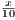 with total wealth = 0.
EV= 0.2 x 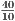 + 0.6 x 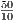 + 0.2 x 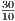 = 4.4 CE: 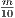 = 4.4 → m=44
The certainty equivalent is 44
b) Rank dependent utility with the utility function: u(x) = 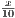 and w(p) = p2 with total wealth = 0.
Probability of outcome q or better:
q=40, p=(0.2) + (0.6) = 0.8
q=50, p=(0.6)
q=30, p=(0.2) + (0.6) + (0.2) = 1
Probability outcome is strictly better than q:
q=40, p=0.6
q=50, p=0
q=30, p=(0.2) + (0.6) = 0.8
w(p) = p2
w(0.8) - w(0.6) = (0.8)2 - (0.6)2= 0.28
w(0.6) - w(0.0) = (0.0)2 - (0.0)2= 0.36
w(1) - w(0.8) = (1)2 - (0.8)2 = 0.36
Expected utility using these updated probability weights is:
EU = 0.28 x 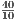 + 0.36 x 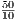 + 0.36 x = 4
CE: 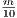 = 4 → m = 40
The certainty equivalent is 40.
Consider the prospects A = (1, 3000), B = (0.8, 4000; 0.2, 0), C = (0.25, 3000; 0.75, 0), and D = (0.2, 4000; 0.8, 0).
It has been found (e.g., Starmer, 2000, Journal of Economic Literature) that most people prefer prospect A over prospect B and prospect D over prospect C.
a) Show that this choice pattern violates Expected Utility theory.
Under expected utility, preferences for prospect A implies:
u(3000) > 0.8 u(4000) + 0.2 u(0)
(u(3000) > 0.8 u(4000) + 0.2 u(0))
→ 0.25 u(3000) > 0.2 u (4000) + 0.05 u(0)
+0.75 u(0)
→ 0.25 u(3000)+ 0.75 u(0) > 0.2 u(4000)+ 0.8 u (4000)
Preferring prospect D to C implies:
0.2u(4000) + 0.8 u(0) > 0.25u(3000) +0.75u(0)
Therefore, under prospect theory an individual cannot prefer A to B and D
to C.
b) Show that Disappointment theory as presented and parameterized on the slides (i.e., with u(x) = x and = 0.0002) can accommodate the observed choice pattern.)
EV(A) = 3000 D(A) = 3000
EV(B) = EU = 3200
D(B)=0.8(4000+0.0002x(4000 - 3200)2 + 0.2(0-0.0002x(0 - 3200)2)=2892.8
Hence, D(A) > D(B)
EV(C) = EU = 750
D(C)=0.25(3000+0.0002x(3000 - 750)2) + 0.75(0-0.0002x(0 - 750)2)=918.75
EV(D) = EU = 800
D(D)=0.2(4000+0.0002x(4000 - 800)2) + 0.8(0-0.0002x(0 - 800)2)=1107.2
Hence, D(D) > D(C)
c) Show that Cumulative Prospect Theory can accommodate the choice pattern.
Using the parametrization by Tversky and Kahnemann
CPT(A)
CPT(B)
CPT(C)
CPT(D)
→ CPT(A) > CPT(B)
→ CPT(D) > CPT(C)
Assume Cumulative Prospect Theory as defined and parameterized by Tversky and Kahneman (1992) (see lecture slides). Calculate the certainty equivalents and risk premia of the following prospects:
a) (0.25, 75; 0.25, 50; 0.25, 25; 0.25, 0)
u+(x) = x0.88 if x ≥ 0
u-(x) = 2.25 * -(-x)0.88 if x < 0 (with λ = 2.25)
w+(p) = 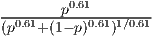
w-(p) = 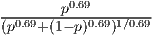
w+(0) = 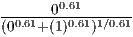 = 0
w+(0.25) = 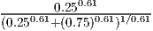 = 0.29074
w+(0.50) = 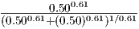 = 0.42064
w+(0.75) = 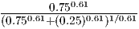 = 0.56827
w+(1) = 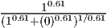 = 1
0.29074 - 0 = 0.29074
0.42064 - 0.29074 = 0.12990
0.56827 - 0.42064 = 0.14763
1 - 0.56827 = 0.43173
u+(75) = 750.88 = 44.674
u+(50) = 500.88 = 31.268
u+(25) = 250.88 = 16.990
u+(0) = 00.88 = 0
CPT = 12.989 + 4.062 + 2.508 + 0 = 19.559
CE0.88 = 19.559 → CE = 29.339
EV = (75) + (50) + (25) + (0) = 37.5
RP = 37.5 - 29.339 = 8.161
b) (0.25, 50; 0.25, 25; 0.25, 0; 0.25, -25)
w-(0.25) = 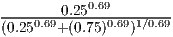 = 0.29352
w-(0) = 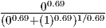 = 0
u-(-25) = 2.25 * -(-- 25)0.88 = -38.227
CPT = 9.091 + 2.207 + 0+ -11.220 = 0.078
CE0.88 = 0.078 → CE = 0.055
EV = (50) + (25) + (0) + (-25) = 12.50
RP = 12.5 - 0.055 = 12.445
c) (0.25, 25; 0.25, 0; 0.25, -25; 0.25, -50)
w-(0.50) = 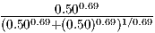 = 0.45399
0.45399-0.29352=0.16047
u-(-50) = 2.25 * -(-- 50)0.88 = -70.352
CPT = 4.940 + 0 + -6.134 + -20.650 = -21.844
CE0.88 = -21.844 → CE = -13.236
EV = (25) + (0) + (-25) + (-50) = -12.50
RP = 12.50 - -13.236 = 0.736
d) (0.25, 0; 0.25, -25; 0.25, -50; 0.25, -75)
w-(0.75) = 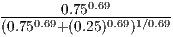 = 0.62640
0.62640-0.45399= 0.17241
u-(-75) = 2.25 * -(-- 75)0.88 = -100.516
CPT = 0 + -6.591 + -11.289 + -29.503 = -47.383
CE0.88 = -47.383 → CE = -31.909
EV = (0) + (-25) + (-50) + (-75) = -37.50
RP = -37.50 - -31.909 = -5.591
Consider the prospects E = (0.5, -3000; 0.5, 4500), F = (0.25, -6000; 0.75, 3000), G = (0.5, -1500; 0.5, 4500), and H = (0.25, -3000; 0.75, 3000). Levy and Levy (2002; Management Science) show that when asked to choose between prospects E and F, 71% of subjects in the laboratory prefer E. In addition, while 76% of subjects prefer to have prospect G rather prospect H. Based on these results, Levy and Levy (2002) conclude that we reject the S-shaped [utility] function [of CPT]. Do you agree with this conclusion? Why (not)?
Using the example from the lecture slides, people can prefer E to F and G to H without violating the expectations of an s-shaped utility curve (see the first graph below). The intuition is that losing x hurts more than gaining x brings pleasure. Although people should prefer 0.75 x 3000 to 0.5 x 4500, the possible loss of 6000 with probability of 0.25 hurts too much and will outweigh the extra utility from 0.75 x 3000.
w+(p) = w-(p) = p2 ; u+(x) = x5 ; u-(x) = -2x5
CPT(E) = w-(0.5)u-(-3000) + w+(0.5)u+(4500)
= 0.52 x (-2) x 30005 + 0.52 x 45005 = 4.6 x 106
CPT(F) = w-(0.25)u-(-6000) + w+(0.75)u+(3000)
= 0.252 x (-2) x 60005 + 0.752 x 30005 = -8.35 x 1017
CPT(E) > CPT(F)
CPT(G) = w-(0.5)u-(-1500) + w+(0.5)u+(4500)
= 0.52 x (-2) x 15002 + 0.252 x 45005 = 4.58 x 1017
CPT(H) = w-(0.25)u-(3000) + w+(0.75)u+(3000)
= 0.252 x (-2) x 30005 + 0.752 x 30005 = 1.06 x 1017
CPT(G) > CPT(H)
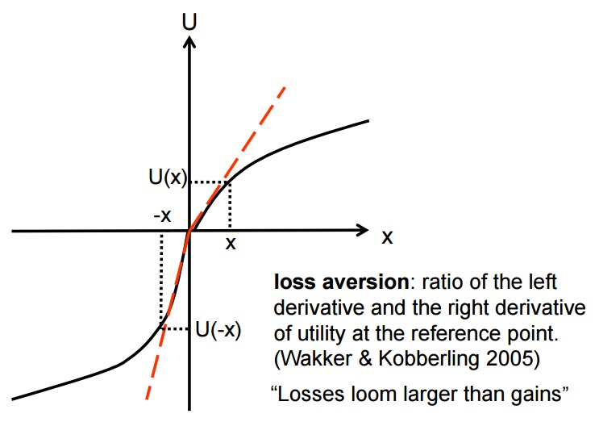
A second possible explanation that comes to the same conclusion that we do not agree with the statement by Levy and Levy (2002) is the following: Looking at the probability weighting of cumulative prospect theory, shows that small probabilities are overweighted and moderate and large probabilities are underweighted (see the second graph below).
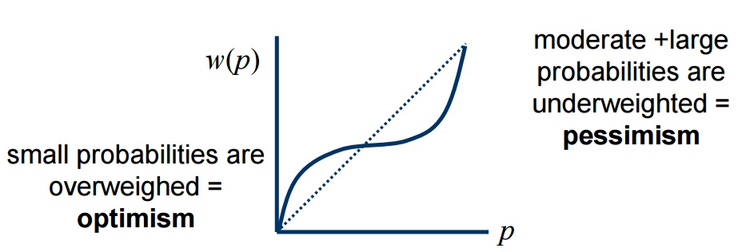
Why do people prefer E over F? In prospect F there is a small probability of a very large negative outcome. Since it is a small probability and a negative outcome, people are pessimistic according to CPT. Prospect E on the other hand has equal moderate probabilities and is hence preferred over a prospect with a small overweighted outcome of loosing 6000 with probability 0.25.
The same logic holds for prospects G and H. In Prospect H there is a small probability of a very large negative outcome. Since it is a small probability and a negative outcome, people are pessimistic according to CPT and hence prefer prospect G over prospect H.